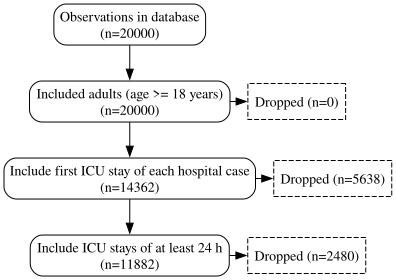
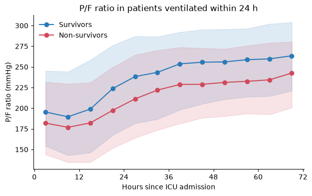
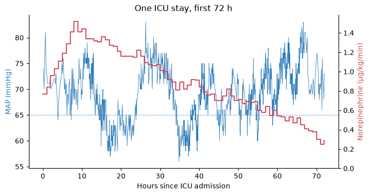
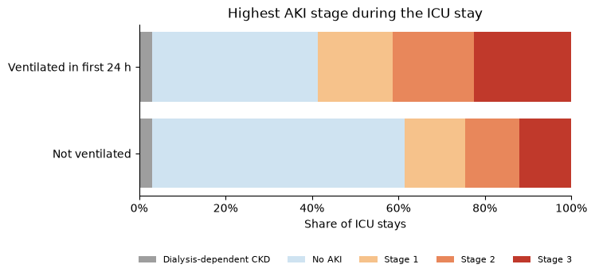

Tutorial: a first study on the Charité demo dataset#
This tutorial walks through a small, realistic study with corr_vars from start to
finish. The question is a classic one in intensive care:
In adults admitted to the ICU, how do patients who are invasively ventilated within the first 24 hours differ from those who are not, in oxygenation, vasopressor support, kidney injury and survival?
You will build a cohort, apply inclusion criteria with a flowchart, add static and time-series variables, condense time series into analysis features over defined time windows, and finish with a Table 1, three plots and an export.
Synthetic data only
Everything here runs on charite_mockdata, a fully synthetic dataset in the table
layout of the Charité data warehouse: 20’000 ICU stays (2019–2025), generated from 22
disease archetypes so that ventilation, vasopressors, kidney injury, SOFA and outcomes
form coherent courses. It contains no real patient data and is not clinically
valid. The numbers below demonstrate the workflow; they are not findings.
Two public services stand behind this tutorial, and neither needs an account:
the dataset, a set of Parquet files at https://demo-data.corr.icu (manifest: https://demo-data.corr.icu/v1/manifest.json), read on demand over HTTPS;
the variable definitions, served by the demo Concepts Browser (project
demo, public keycak_demo_0d2b53ac; sign in asdemoto browse the definitions in the web app).
1. Setup#
Install corr-vars (from PyPI) with the charite-demo extra (it adds pycomorb, which the
Elixhauser comorbidity score needs):
uv add "corr-vars[charite-demo]"
# or, without uv:
pip install "corr-vars[charite-demo]"
Connecting#
A Cohort is the central object. It needs an observation level (here one row per ICU
stay), the data source and the Concepts API project and key that serve the
variable definitions. {"charite_demo": {}} uses the source defaults, i.e. the public
dataset URL.
import matplotlib.pyplot as plt
import polars as pl
from corr_vars import Cohort
cohort = Cohort(
obs_level="icu_stay", # one row per ICU stay
sources={"charite_demo": {}}, # the public synthetic dataset, read over HTTPS
project="demo", # project on the demo Concepts API
api_key="cak_demo_0d2b53ac", # public demo key
load_default_vars=False, # start from the bare cohort frame
)
obs = cohort.obs
print(
f"{len(cohort):,} ICU stays, {obs['case_id'].n_unique():,} hospital cases, "
f"{obs['patient_id'].n_unique():,} patients"
)
20,000 ICU stays, 14,362 hospital cases, 13,556 patients
Building the cohort loads only the small administrative tables (a few MB). Clinical data are fetched later, variable by variable, and only the parts a query needs.
cohort.obs is a polars DataFrame with one row per ICU stay. It
already contains the identifiers (patient_id, case_id, icu_stay_id),
demographics (age_on_admission, sex), the time anchors (hospital_admission,
hospital_discharge, icu_admission, icu_discharge), the ICD-10 codes coded at ICU
admission (icu_admission_diagnoses) and inhospital_death:
obs.select(
"icu_stay_id",
"case_id",
"age_on_admission",
"sex",
"hospital_admission",
"icu_admission",
"icu_discharge",
"icu_admission_diagnoses",
"inhospital_death",
).sort("icu_stay_id").head(5)
| icu_stay_id | case_id | age_on_admission | sex | hospital_admission | icu_admission | icu_discharge | icu_admission_diagnoses | inhospital_death |
|---|---|---|---|---|---|---|---|---|
| str | str | i64 | str | datetime[μs] | datetime[μs] | datetime[μs] | list[str] | bool |
| "0040000000_1" | "0040000000" | 59 | "F" | 2019-01-01 00:55:00 | 2019-01-01 03:42:00 | 2019-01-03 20:05:00 | ["K25.0"] | false |
| "0040000000_2" | "0040000000" | 59 | "F" | 2019-01-01 00:55:00 | 2019-01-12 12:51:00 | 2019-01-12 22:15:00 | ["K25.0"] | false |
| "0040000001_1" | "0040000001" | 60 | "M" | 2019-01-01 07:24:00 | 2019-01-01 10:41:00 | 2019-01-02 02:52:00 | ["T42.4"] | false |
| "0040000001_2" | "0040000001" | 60 | "M" | 2019-01-01 07:24:00 | 2019-01-07 19:21:00 | 2019-01-10 21:16:00 | ["T42.4"] | false |
| "0040000001_3" | "0040000001" | 60 | "M" | 2019-01-01 07:24:00 | 2019-01-15 23:21:00 | 2019-01-18 02:30:00 | ["T42.4"] | false |
obs.select(
pl.col("age_on_admission").median().alias("median age"),
(pl.col("sex") == "F").mean().round(3).alias("female (share)"),
pl.col("inhospital_death").mean().round(3).alias("in-hospital death (share)"),
pl.col("icu_admission").min().dt.date().alias("first ICU admission"),
pl.col("icu_admission").max().dt.date().alias("last ICU admission"),
)
| median age | female (share) | in-hospital death (share) | first ICU admission | last ICU admission |
|---|---|---|---|---|
| f64 | f64 | f64 | date | date |
| 68.0 | 0.382 | 0.127 | 2019-01-01 | 2025-12-31 |
Working offline
Reading over HTTPS transfers only what each query touches, but every query pays network round-trips. For repeated work, download the dataset once (about 195 MB) and point the source at the folder:
from corr_vars.sources import charite_demo
path = charite_demo.download("~/data/charite_mockdata") # resumes if interrupted
cohort = Cohort(
obs_level="icu_stay",
sources={"charite_demo": {"path": path}},
project="demo",
api_key="cak_demo_0d2b53ac",
)
The variable definitions still come from the Concepts API, so the key is still needed.
2. Inclusion criteria and the flowchart#
Every inclusion or exclusion step is recorded by the cohort’s change tracker, which draws the study flowchart for you. There are two ways to add a step:
cohort.include_list([...])/cohort.exclude_list([...])for criteria on a variable, written as{"variable": ..., "operation": ...};with cohort.change_tracker(...) as track:for any polars expression oncohort.obs.
Our criteria: adults, the first ICU stay of each hospital case (so that every patient episode enters once) and an ICU stay of at least 24 hours (so that the first-24-hour features below are defined).
cohort.include_list(
[
{
"variable": "age_on_admission",
"operation": ">= 18",
"label": "Adults",
"operations_done": "adults (age >= 18 years)",
},
]
)
# Number the ICU stays within each hospital case by admission time
cohort.obs = cohort.obs.with_columns(
icu_stay_number=pl.col("icu_admission").rank("ordinal").over("case_id")
)
with cohort.change_tracker("first ICU stay of each hospital case") as track:
track.filter(pl.col("icu_stay_number") == 1)
with cohort.change_tracker("ICU stays of at least 24 h") as track:
track.filter(pl.col("icu_discharge") - pl.col("icu_admission") >= pl.duration(hours=24))
print(f"Study cohort: {len(cohort):,} ICU stays")
cohort.figureone
Study cohort: 11,882 ICU stays

The source already restricts the dataset to adults by default (its
filter.include_adults_only option), so the first step removes nobody; it is kept here
because a protocol states it explicitly. cohort.figureone returns a matplotlib figure;
use cohort.to_figureone(output_file="flowchart.pdf") to save it, or
cohort.to_figureone(layout="profile") for a trial-profile layout.
Note
The 24-hour criterion is computed from the raw time stamps on purpose. The
icu_length_of_stay concept (next section) reports the length of stay in days with a
floor of 1.0, so icu_length_of_stay >= 1 would keep every stay. Reading a concept’s
definition before using it as a criterion pays off; see section 7.
3. Static variables#
A concept is a curated, versioned variable definition. cohort.add_variable(name)
fetches the definition for this source from the Concepts API, runs it against the data and
stores the result. Static concepts (one value per stay) become columns of
cohort.obs:
for name in [
"icu_length_of_stay", # days
"icu_admiss_type", # surgical / medical
"icu_admission_apache_iii", # APACHE III admission diagnosis group
"elix_total_vw", # Elixhauser comorbidity index (van Walraven weights)
"elixhauser_icd10_chf", # congestive heart failure (Elixhauser ICD-10 codes)
]:
cohort.add_variable(name)
cohort.obs.select(
"icu_stay_id",
"age_on_admission",
"icu_length_of_stay",
"icu_admiss_type",
"icu_admission_apache_iii",
"elix_total_vw",
"elixhauser_icd10_chf",
).sort("icu_stay_id").head(5)
| icu_stay_id | age_on_admission | icu_length_of_stay | icu_admiss_type | icu_admission_apache_iii | elix_total_vw | elixhauser_icd10_chf |
|---|---|---|---|---|---|---|
| str | i64 | f64 | str | str | i64 | bool |
| "0040000000_1" | 59 | 2.682639 | "medical" | "Gastrointestinal" | 0 | false |
| "0040000002_1" | 75 | 1.682639 | "surgical" | "Cardiovascular" | 5 | false |
| "0040000003_1" | 44 | 9.554861 | "surgical" | "Neurologic" | -3 | false |
| "0040000005_1" | 70 | 4.334722 | "medical" | "Cardiovascular" | -2 | false |
| "0040000006_1" | 65 | 5.361806 | "medical" | "Gastrointestinal" | -5 | false |
age_on_admission needs no add_variable call: it is part of the cohort frame from the
start, like sex and inhospital_death.
Some concepts bring companion columns. elix_total_vw adds elix_total_vw_detail, a
struct with one 0/1 flag per Elixhauser comorbidity group. Unnesting it gives the
prevalence of each group:
(
cohort.obs.select(pl.col("elix_total_vw_detail").struct.unnest())
.mean()
.transpose(include_header=True, header_name="comorbidity", column_names=["share"])
.sort("share", descending=True)
.head(8)
)
| comorbidity | share |
|---|---|
| str | f64 |
| "Hypertension uncomplicated" | 0.357095 |
| "Fluid and electrolyte disorder… | 0.324188 |
| "Cardiac arrhythmias" | 0.293217 |
| "Congestive heart failure" | 0.24777 |
| "Chronic pulmonary disease" | 0.176233 |
| "Solid tumor without metastasis" | 0.162346 |
| "Obesity" | 0.142484 |
| "Renal failure" | 0.141474 |
Note
elix_total_vw is computed from the diagnoses time-stamped inside the observation
window. In this dataset, diagnoses are coded during the first ICU stay of a case, so a
later ICU stay of the same case has no diagnoses and gets a null score (about 23 % of all
ICU stays). Restricting the cohort to the first ICU stay per case removes them:
print(f"elix_total_vw missing: {cohort.obs['elix_total_vw'].null_count():,} of {len(cohort):,} stays")
elix_total_vw missing: 0 of 11,882 stays
Not every concept is a single value. dx_diabetes_mellitus_any returns every matching
diagnosis with its time stamp, so it lands in cohort.obsm, the dictionary of
time-series variables:
cohort.add_variable("dx_diabetes_mellitus_any")
cohort.obsm["dx_diabetes_mellitus_any"].select(
"icu_stay_id", "recordtime", "value"
).sort("icu_stay_id").head(5)
| icu_stay_id | recordtime | value |
|---|---|---|
| str | datetime[μs] | str |
| "0040000002_1" | 2019-01-03 16:38:00 | "E11.72" |
| "0040000005_1" | 2019-01-03 12:34:00 | "E10.20" |
| "0040000007_1" | 2019-01-11 08:58:00 | "E11.91" |
| "0040000010_1" | 2019-01-04 06:07:00 | "E10.20" |
| "0040000011_1" | 2019-01-03 23:46:00 | "E11.90" |
To turn an event list into one value per stay, wrap it in an aggregation variable.
NativeStatic takes a base_var, an aggregation in select and a time window. Here
"!any" asks “is there at least one matching diagnosis during the hospital case?”:
from corr_vars.sources.charite_demo import NativeStatic
cohort.add_variable(
NativeStatic(
"diabetes",
select="!any",
base_var="dx_diabetes_mellitus_any",
tmin="hospital_admission",
tmax="hospital_discharge",
)
)
cohort.obs["diabetes"].value_counts(sort=True)
| diabetes | count |
|---|---|
| bool | u32 |
| false | 9119 |
| true | 2763 |
4. Time series and time windows#
Dynamic concepts return one row per measurement or per interval, with the columns
recordtime (and recordtime_end for intervals), value, value_unit and
attributes (a struct with concept-specific details). recordtime_relative is the time
in seconds since ICU admission.
By default a dynamic variable covers the observation itself, here from icu_admission to
icu_discharge. Mean arterial pressure is the largest concept in the demo (about
19 million invasive and non-invasive readings for all ICU stays), so this cell takes
roughly 10–20 seconds:
cohort.add_variable("blood_pressure_mean")
cohort.add_variable("norepinephrine")
cohort.obsm["norepinephrine"].select(
"icu_stay_id",
"recordtime",
"recordtime_end",
"value",
"value_unit",
pl.col("attributes").struct.field("rate_value", "rate_unit"),
).sort("icu_stay_id", "recordtime").head(5)
| icu_stay_id | recordtime | recordtime_end | value | value_unit | rate_value | rate_unit |
|---|---|---|---|---|---|---|
| str | datetime[μs] | datetime[μs] | f64 | str | str | str |
| "0040000002_1" | 2019-01-02 13:38:00 | 2019-01-02 14:38:00 | 0.2439 | "mg" | "0.06" | "µg/kg/min" |
| "0040000002_1" | 2019-01-02 14:38:00 | 2019-01-02 15:38:00 | 0.2846 | "mg" | "0.07" | "µg/kg/min" |
| "0040000002_1" | 2019-01-02 15:38:00 | 2019-01-02 16:38:00 | 0.2033 | "mg" | "0.05" | "µg/kg/min" |
| "0040000002_1" | 2019-01-02 16:38:00 | 2019-01-02 17:38:00 | 0.122 | "mg" | "0.03" | "µg/kg/min" |
| "0040000005_1" | 2019-01-01 12:53:00 | 2019-01-01 13:53:00 | 1.5405 | "mg" | "0.25" | "µg/kg/min" |
For norepinephrine, value is the amount given per charted interval (mg), and the
infusion rate as charted (µg/kg/min) sits in attributes.
Derived concepts resolve their dependencies#
The P/F ratio (PaO₂ / FiO₂) is not charted anywhere. Its definition requires two other
concepts, arterial PaO₂ (blood_pao2_arterial) and the FiO₂ setting (vent_fio2), and
pairs each blood gas with the closest FiO₂. corr_vars fetches and extracts the
requirements (and theirs, recursively) on its own:
pf = cohort.add_variable("pf_ratio")
pf.variables["charite_demo"].requirements
{'blood_pao2_arterial': {'template': 'blood_pao2_arterial',
'tmin': 'inherit',
'tmax': 'inherit'},
'vent_fio2': {'template': 'vent_fio2', 'tmin': 'inherit', 'tmax': 'inherit'}}
Every definition that was used, including the indirect ones, is recorded with its
version in cohort.concept_versions. This is what makes a cohort reproducible: you can
see (and later pin) exactly which version of each definition built it.
pl.DataFrame(
[
{"concept": name, "version": r["version"], "status": r["status"]}
for name, records in cohort.concept_versions.items()
for r in records
]
)
| concept | version | status |
|---|---|---|
| str | i64 | str |
| "icu_length_of_stay" | 2 | "published" |
| "icu_admiss_type" | 1 | "published" |
| "any_surgery_ops" | 1 | "published" |
| "surgery_ops" | 1 | "published" |
| "icu_admission_apache_iii" | 1 | "published" |
| … | … | … |
| "fio2_set" | 1 | "published" |
| "fio2_set_helper" | 1 | "published" |
| "ventilator_mode_automatic_stan… | 1 | "published" |
| "ventilator_mode_automatic" | 1 | "published" |
| "fio2_observed" | 1 | "published" |
for name in ["invasive_vent", "endotracheal_tube", "sofa_score_total"]:
cohort.add_variable(name)
cohort.obsm["invasive_vent"].select(
"icu_stay_id", "recordtime", "recordtime_end", "value", "value_unit", "attributes"
).sort("icu_stay_id", "recordtime").head(5)
| icu_stay_id | recordtime | recordtime_end | value | value_unit | attributes |
|---|---|---|---|---|---|
| str | datetime[μs] | datetime[μs] | f64 | str | str |
| "0040000000_1" | 2019-01-01 23:04:00 | 2019-01-03 00:18:00 | 25.233333 | "hours" | "endotracheal" |
| "0040000002_1" | 2019-01-02 08:52:00 | 2019-01-02 14:56:00 | 6.066667 | "hours" | "endotracheal" |
| "0040000003_1" | 2019-01-01 13:30:00 | 2019-01-10 17:43:00 | 220.216667 | "hours" | "endotracheal" |
| "0040000005_1" | 2019-01-03 03:14:00 | 2019-01-05 18:32:00 | 63.3 | "hours" | "endotracheal" |
| "0040000010_1" | 2019-01-02 00:33:00 | 2019-01-05 22:11:00 | 93.633333 | "hours" | "endotracheal" |
invasive_vent has one row per ventilation episode (start, end, duration in hours, and
the airway in attributes); endotracheal_tube holds the tube insertions and removals;
sofa_score_total holds the daily SOFA scores.
From time series to analysis features#
An analysis usually needs one value per stay: the worst P/F in the first 24 hours, the lowest MAP, whether norepinephrine was running. Two arguments define such a feature:
the aggregation (
select):!first,!last,!min,!max,!mean,!median,!sum,!count,!any,!perc(q),!closest(...),!sum_interval(see Aggregated Variables);the time window (
tmin,tmax): a column ofcohort.obs, or a(column, offset)tuple such as("icu_admission", "+24h").
Important
Always pass tmin and tmax to NativeStatic. Without them the window is
unbounded and the aggregation runs over everything the base variable returns, not
just this ICU stay.
first_24h = {"tmin": "icu_admission", "tmax": ("icu_admission", "+24h")}
whole_icu_stay = {"tmin": "icu_admission", "tmax": "icu_discharge"}
features = [
NativeStatic("pf_worst_24h", select="!min value", base_var="pf_ratio", **first_24h),
NativeStatic("map_lowest_24h", select="!min value", base_var="blood_pressure_mean", **first_24h),
NativeStatic("norepinephrine_24h", select="!any", base_var="norepinephrine", **first_24h),
NativeStatic("invasive_vent_24h", select="!any", base_var="invasive_vent", **first_24h),
NativeStatic("sofa_first", select="!first value", base_var="sofa_score_total", **first_24h),
NativeStatic("sofa_max", select="!max value", base_var="sofa_score_total", **whole_icu_stay),
NativeStatic("vent_hours_icu", select="!sum_interval value", base_var="invasive_vent", **whole_icu_stay),
]
for feature in features:
cohort.add_variable(feature)
cohort.obs.select(
"pf_worst_24h", "map_lowest_24h", "norepinephrine_24h", "invasive_vent_24h",
"sofa_first", "sofa_max", "vent_hours_icu",
).describe()
| statistic | pf_worst_24h | map_lowest_24h | norepinephrine_24h | invasive_vent_24h | sofa_first | sofa_max | vent_hours_icu |
|---|---|---|---|---|---|---|---|
| str | f64 | f64 | f64 | f64 | f64 | f64 | f64 |
| "count" | 5613.0 | 11882.0 | 11882.0 | 11882.0 | 11766.0 | 11871.0 | 11882.0 |
| "null_count" | 6269.0 | 0.0 | 0.0 | 0.0 | 116.0 | 11.0 | 0.0 |
| "mean" | 205.193642 | 65.383016 | 0.47896 | 0.255008 | 8.635475 | 8.816528 | 34.957709 |
| "std" | 63.973246 | 9.37471 | null | null | 3.233899 | 3.367249 | 84.61143 |
| "min" | 37.0 | 38.0 | 0.0 | 0.0 | 0.0 | 0.0 | 0.0 |
| "25%" | 161.290323 | 58.0 | null | null | 6.0 | 6.0 | 0.0 |
| "50%" | 209.210526 | 64.0 | null | null | 8.0 | 9.0 | 0.033333 |
| "75%" | 253.225806 | 72.0 | null | null | 11.0 | 11.0 | 33.1 |
| "max" | 433.448276 | 100.0 | 1.0 | 1.0 | 20.0 | 20.0 | 1675.85 |
!sum_interval sums interval values weighted by how much of each interval falls inside
the window, so a ventilation episode that started in the operating room counts only with
its ICU hours.
Anything the aggregation syntax does not cover is a few lines of polars on
cohort.obsm. The highest norepinephrine rate in the first 24 hours, for example,
lives in the attributes struct:
norepi_max_rate = (
cohort.obsm["norepinephrine"]
.filter(pl.col("recordtime_relative").is_between(0, 24 * 3600))
.group_by("icu_stay_id")
.agg(
pl.col("attributes")
.struct.field("rate_value")
.cast(pl.Float64, strict=False)
.max()
.alias("norepi_max_rate_24h")
)
)
cohort.obs = cohort.obs.join(norepi_max_rate, on="icu_stay_id", how="left")
cohort.obs["norepi_max_rate_24h"].describe()
| statistic | value |
|---|---|
| str | f64 |
| "count" | 5691.0 |
| "null_count" | 6191.0 |
| "mean" | 0.258216 |
| "std" | 0.15796 |
| "min" | 0.03 |
| "25%" | 0.15 |
| "50%" | 0.22 |
| "75%" | 0.33 |
| "max" | 1.52 |
5. Outcomes#
Acute kidney injury#
The demo has both KDIGO criteria as hourly or per-sample stage series: creatinine-based
(aki_crea_based) and urine-output-based (aki_urine_output). Stage -1 marks
dialysis-dependent chronic kidney disease (not assessable). The outcome is the highest
stage reached during the ICU stay by either criterion:
for feature in [
NativeStatic("aki_crea_max", select="!max value", base_var="aki_crea_based", **whole_icu_stay),
NativeStatic("aki_uo_max", select="!max value", base_var="aki_urine_output", **whole_icu_stay),
]:
cohort.add_variable(feature)
aki_labels = {-1: "Dialysis-dependent CKD", 0: "No AKI", 1: "Stage 1", 2: "Stage 2", 3: "Stage 3"}
cohort.obs = cohort.obs.with_columns(
aki_stage_max=pl.when(pl.min_horizontal("aki_crea_max", "aki_uo_max") == -1)
.then(-1)
.otherwise(pl.max_horizontal("aki_crea_max", "aki_uo_max"))
)
cohort.obs.group_by("aki_stage_max").len().sort("aki_stage_max").with_columns(
pl.col("aki_stage_max").replace_strict(aki_labels, default=None).alias("label")
)
| aki_stage_max | len | label |
|---|---|---|
| i32 | u32 | str |
| -1 | 365 | "Dialysis-dependent CKD" |
| 0 | 6320 | "No AKI" |
| 1 | 1771 | "Stage 1" |
| 2 | 1674 | "Stage 2" |
| 3 | 1752 | "Stage 3" |
inhospital_death is already in cohort.obs. For outcomes over a fixed horizon (for
example ventilator-free days to day 28) see Cohort.add_horizon_variable.
Surgical patients: anchoring the window at hospital admission#
About a third of the ICU admissions in the demo follow surgery. The anaesthesia record (ASA physical status, urgency of the operation) is charted in the operating room, i.e. before ICU admission. With the default window, which starts at ICU admission, these concepts are almost empty:
cohort.add_variable("asa_physical_status")
n_with_asa = cohort.obsm["asa_physical_status"]["icu_stay_id"].n_unique()
print(f"ASA within the ICU stay: {n_with_asa:,} of {len(cohort):,} stays")
ASA within the ICU stay: 572 of 11,882 stays
A window from hospital admission to ICU admission captures the operation that led to the
ICU stay. !last keeps the most recent record before the ICU admission:
before_icu = {"tmin": "hospital_admission", "tmax": "icu_admission"}
for feature in [
NativeStatic("surgery_before_icu", select="!any", base_var="surgery", **before_icu),
NativeStatic("asa", select="!last value", base_var="asa_physical_status", **before_icu),
NativeStatic("surgery_urgency_last", select="!last value", base_var="surgery_urgency", **before_icu),
]:
cohort.add_variable(feature)
(
cohort.obs.filter(pl.col("icu_admiss_type") == "surgical")
.group_by("asa")
.len()
.sort("asa")
)
| asa | len |
|---|---|
| i64 | u32 |
| null | 425 |
| 2 | 686 |
| 3 | 1652 |
| 4 | 1471 |
| 5 | 315 |
(
cohort.obs.group_by("icu_admiss_type", "surgery_before_icu")
.len()
.sort("icu_admiss_type", "surgery_before_icu")
)
| icu_admiss_type | surgery_before_icu | len |
|---|---|---|
| str | bool | u32 |
| "medical" | false | 7333 |
| "surgical" | false | 425 |
| "surgical" | true | 4124 |
surgery_urgency uses the Charité coding N0–N5, where N0 is an elective operation
and N1–N5 are emergency categories of increasing urgency.
6. Table 1 and plots#
cohort.to_tableone() builds a TableOne from
cohort.obs (or from a DataFrame you pass). Numeric columns are summarised as median
[Q1, Q3], booleans and strings as counts. Preparing a small, labelled frame first gives a
clean table:
table_df = cohort.obs.select(
pl.when(pl.col("invasive_vent_24h"))
.then(pl.lit("Ventilated in first 24 h"))
.otherwise(pl.lit("Not ventilated"))
.alias("group"),
"age_on_admission",
pl.col("sex").replace_strict({"F": "female", "M": "male"}),
"icu_admiss_type",
"elix_total_vw",
"elixhauser_icd10_chf",
"diabetes",
"sofa_first",
"pf_worst_24h",
"map_lowest_24h",
"norepinephrine_24h",
"vent_hours_icu",
pl.col("aki_stage_max").replace_strict(aki_labels, default=None, return_dtype=pl.Utf8),
"icu_length_of_stay",
"inhospital_death",
)
table1 = cohort.to_tableone(
df=table_df,
groupby="group",
overall=True,
order={"aki_stage_max": list(aki_labels.values())},
rename={
"age_on_admission": "Age, years",
"sex": "Sex",
"icu_admiss_type": "ICU admission type",
"elix_total_vw": "Elixhauser index (van Walraven)",
"elixhauser_icd10_chf": "Congestive heart failure",
"diabetes": "Diabetes mellitus",
"sofa_first": "SOFA, first 24 h",
"pf_worst_24h": "Worst P/F, first 24 h, mmHg",
"map_lowest_24h": "Lowest MAP, first 24 h, mmHg",
"norepinephrine_24h": "Norepinephrine, first 24 h",
"vent_hours_icu": "Invasive ventilation in ICU, h",
"aki_stage_max": "Highest AKI stage in ICU",
"icu_length_of_stay": "ICU length of stay, days",
"inhospital_death": "In-hospital death",
},
)
table1
| Grouped by group | |||||
|---|---|---|---|---|---|
| Missing | Overall | Not ventilated | Ventilated in first 24 h | ||
| n | 11882 | 8852 | 3030 | ||
| Age, years, median [Q1,Q3] | 0 | 68.0 [58.0,76.0] | 68.0 [58.0,76.0] | 68.0 [58.0,76.0] | |
| Sex, n (%) | female | 4591 (38.6) | 3448 (39.0) | 1143 (37.7) | |
| male | 7291 (61.4) | 5404 (61.0) | 1887 (62.3) | ||
| ICU admission type, n (%) | medical | 7333 (61.7) | 4713 (53.2) | 2620 (86.5) | |
| surgical | 4549 (38.3) | 4139 (46.8) | 410 (13.5) | ||
| Elixhauser index (van Walraven), median [Q1,Q3] | 0 | 7.0 [3.0,12.0] | 7.0 [3.0,12.0] | 7.0 [2.0,12.0] | |
| Congestive heart failure, n (%) | Yes | 2944 (24.8) | 2168 (24.5) | 776 (25.6) | |
| No | 8938 (75.2) | 6684 (75.5) | 2254 (74.4) | ||
| Diabetes mellitus, n (%) | Yes | 2763 (23.3) | 2095 (23.7) | 668 (22.0) | |
| No | 9119 (76.7) | 6757 (76.3) | 2362 (78.0) | ||
| SOFA, first 24 h, median [Q1,Q3] | 116 | 8.0 [6.0,11.0] | 8.0 [6.0,10.0] | 11.0 [9.0,13.0] | |
| Worst P/F, first 24 h, mmHg, median [Q1,Q3] | 6269 | 209.2 [161.3,253.2] | 240.3 [202.9,263.7] | 171.6 [127.7,220.3] | |
| Lowest MAP, first 24 h, mmHg, median [Q1,Q3] | 0 | 64.0 [58.0,72.0] | 66.0 [60.0,74.0] | 59.0 [56.0,64.0] | |
| Norepinephrine, first 24 h, n (%) | Yes | 5691 (47.9) | 3539 (40.0) | 2152 (71.0) | |
| No | 6191 (52.1) | 5313 (60.0) | 878 (29.0) | ||
| Invasive ventilation in ICU, h, median [Q1,Q3] | 0 | 0.0 [0.0,33.1] | 0.0 [0.0,1.3] | 64.2 [29.3,136.5] | |
| Highest AKI stage in ICU, n (%) | Dialysis-dependent CKD | 365 (3.1) | 275 (3.1) | 90 (3.0) | |
| No AKI | 6320 (53.2) | 5158 (58.3) | 1162 (38.3) | ||
| Stage 1 | 1771 (14.9) | 1246 (14.1) | 525 (17.3) | ||
| Stage 2 | 1674 (14.1) | 1102 (12.4) | 572 (18.9) | ||
| Stage 3 | 1752 (14.7) | 1071 (12.1) | 681 (22.5) | ||
| ICU length of stay, days, median [Q1,Q3] | 0 | 3.1 [1.8,6.1] | 2.7 [1.7,5.0] | 5.0 [2.7,9.5] | |
| In-hospital death, n (%) | Yes | 1659 (14.0) | 881 (10.0) | 778 (25.7) | |
| No | 10178 (85.7) | 7939 (89.7) | 2239 (73.9) | ||
| None | 45 (0.4) | 32 (0.4) | 13 (0.4) | ||
The P/F ratio needs a charted FiO₂, which exists mainly for patients on a ventilator or a
high-flow device; hence the many missing values. In-hospital death is unknown (None)
for cases that were still open on the dataset’s reference date (31 Dec 2025). To use the table in a manuscript, export it:
table1.to_excel("table1.xlsx"), or with the helpers in corr_vars.utils:
tableone_to_latex, tableone_to_markdown, tableone_to_html, tableone_to_pdf.
Plot 1: oxygenation over the first three days#
Median and interquartile range of the P/F ratio in 6-hour bins, for patients ventilated within 24 hours, by survival:
ventilated = cohort.obs.filter(pl.col("invasive_vent_24h")).select("icu_stay_id", "inhospital_death")
pf_course = (
cohort.obsm["pf_ratio"]
.join(ventilated, on="icu_stay_id")
.filter(pl.col("recordtime_relative").is_between(0, 72 * 3600, closed="left"))
.with_columns(hour=(pl.col("recordtime_relative") // (6 * 3600)) * 6 + 3)
.group_by("inhospital_death", "hour")
.agg(
pl.col("value").median().alias("median"),
pl.col("value").quantile(0.25).alias("q1"),
pl.col("value").quantile(0.75).alias("q3"),
)
.drop_nulls("inhospital_death")
.sort("hour")
)
fig, ax = plt.subplots(figsize=(7, 4))
for died, label, color in [(False, "Survivors", "#2a7ab9"), (True, "Non-survivors", "#d1495b")]:
d = pf_course.filter(pl.col("inhospital_death") == died)
ax.plot(d["hour"], d["median"], marker="o", color=color, label=label)
ax.fill_between(d["hour"], d["q1"], d["q3"], color=color, alpha=0.15)
ax.set(
xlabel="Hours since ICU admission",
ylabel="P/F ratio (mmHg)",
xticks=range(0, 73, 12),
title="P/F ratio in patients ventilated within 24 h",
)
ax.legend(frameon=False)
ax.spines[["top", "right"]].set_visible(False)
plt.show()

Plot 2: blood pressure and norepinephrine in one stay#
Time series are easiest to sanity-check one patient at a time. Here, the ventilated stay with the highest norepinephrine rate in the first 24 hours:
stay_id = (
cohort.obs.filter(pl.col("invasive_vent_24h"))
.sort("norepi_max_rate_24h", "icu_stay_id", descending=[True, False], nulls_last=True)
.item(0, "icu_stay_id")
)
hours = (pl.col("recordtime_relative") / 3600).alias("hours")
window = pl.col("recordtime_relative").is_between(0, 72 * 3600)
map_stay = cohort.obsm["blood_pressure_mean"].filter(
(pl.col("icu_stay_id") == stay_id) & window
).select(hours, "value")
norepi_stay = cohort.obsm["norepinephrine"].filter(
(pl.col("icu_stay_id") == stay_id) & window
).select(
hours,
pl.col("attributes").struct.field("rate_value").cast(pl.Float64, strict=False).alias("rate"),
)
fig, ax = plt.subplots(figsize=(8, 4))
ax.plot(map_stay["hours"], map_stay["value"], color="#2a7ab9", linewidth=0.6)
ax.axhline(65, color="#2a7ab9", linestyle=":", linewidth=1)
ax.set(xlabel="Hours since ICU admission", ylabel="MAP (mmHg)", title="One ICU stay, first 72 h")
ax.yaxis.label.set_color("#2a7ab9")
ax2 = ax.twinx()
ax2.step(norepi_stay["hours"], norepi_stay["rate"], where="post", color="#d1495b")
ax2.set_ylabel("Norepinephrine (µg/kg/min)", color="#d1495b")
ax2.set_ylim(bottom=0)
for a in (ax, ax2):
a.spines[["top"]].set_visible(False)
plt.show()

Plot 3: highest AKI stage by early ventilation#
aki_share = (
table_df.drop_nulls("aki_stage_max")
.group_by("group", "aki_stage_max")
.len()
.with_columns(share=pl.col("len") / pl.col("len").sum().over("group"))
)
stages = list(aki_labels.values())
groups = ["Not ventilated", "Ventilated in first 24 h"]
colors = ["#9e9e9e", "#cfe3f1", "#f6c28b", "#e8875b", "#c0392b"]
fig, ax = plt.subplots(figsize=(7, 2.8))
left = [0.0, 0.0]
for stage, color in zip(stages, colors):
widths = [
aki_share.filter((pl.col("group") == g) & (pl.col("aki_stage_max") == stage))["share"].sum()
for g in groups
]
ax.barh(groups, widths, left=left, color=color, label=stage)
left = [l + w for l, w in zip(left, widths)]
ax.set(xlim=(0, 1), xlabel="Share of ICU stays", title="Highest AKI stage during the ICU stay")
ax.xaxis.set_major_formatter(plt.matplotlib.ticker.PercentFormatter(1.0))
ax.legend(ncols=5, frameon=False, loc="upper center", bbox_to_anchor=(0.5, -0.3), fontsize=8)
ax.spines[["top", "right"]].set_visible(False)
plt.show()

7. Where does a variable come from? And exporting#
Inspecting a definition#
Each concept’s definition is open. In the browser, look a concept up in the
demo Concepts Browser (sign in as demo), e.g.
pf_ratio: its
documentation, the source-specific configuration, the Python code, and the full version
history.
From Python, the variable object returned by add_variable carries what was executed: the
requirements shown above and, for concepts with code, the exact source text that ran:
print(pf.variables["charite_demo"].py.source[:900], "...")
def pf_ratio(
var: VariableContext,
cohort: Cohort,
plusminus: pd.Timedelta = pd.Timedelta(hours=24),
strategy: AsofJoinStrategy = "nearest",
) -> pd.DataFrame:
"""
Calculate the PF ratio by matching each PaO2 value to the closest FiO2 value within a specified time window,
and filter PF ratios to keep only values between 10 and 1000.
Args:
var: VariableContext container with required data for PaO2 and FiO2.
cohort: Cohort object containing the primary key.
plusminus (pd.Timedelta): Optional time range within which to find the closest FiO2 for each PaO2.
Defaults to 24 hours.
strategy (str): Strategy for asof join - "nearest", "backward", or "forward". Defaults to "nearest".
Returns:
pd.DataFrame: DataFrame with the primary key, PaO2, closest FiO2, and calculated, cleaned PF rat ...
{k: v for k, v in cohort.concept_versions["pf_ratio"][0].items() if k != "endpoint"}
{'taxonomy': 'corr_v1',
'name': 'pf_ratio',
'source': 'charite_demo',
'origin': 'api',
'concept_id': 29,
'requested': 'latest',
'version': 1,
'source_version': 1,
'status': 'published',
'committed_at': '2026-10-22T11:45:14.054017',
'deprecated_at': None,
'successor_id': None,
'pointer_deprecated_at': None,
'warning': None}
To freeze a study, pin the definitions: Cohort(..., date="2026-10-22") resolves every
concept (and every dependency) as of that day, and add_variable("pf_ratio::v2") pins a
single one.
Exporting#
cohort.save() writes the whole cohort, including all time series and the concept
versions, to one .corr3 file that Cohort.load() reads back without network access.
For other tools, to_parquet(), to_csv() and to_stata() write obs and every
obsm table:
import tempfile
from pathlib import Path
export_dir = Path(tempfile.mkdtemp())
cohort.save(export_dir / "ventilation_study.corr3")
cohort.to_parquet(export_dir / "parquet")
sorted(p.relative_to(export_dir).as_posix() for p in export_dir.rglob("*") if p.is_file())
['parquet/_obs.parquet',
'parquet/asa_physical_status.parquet',
'parquet/blood_pressure_mean.parquet',
'parquet/dx_diabetes_mellitus_any.parquet',
'parquet/endotracheal_tube.parquet',
'parquet/invasive_vent.parquet',
'parquet/norepinephrine.parquet',
'parquet/pf_ratio.parquet',
'parquet/sofa_score_total.parquet',
'ventilation_study.corr3']
reloaded = Cohort.load(export_dir / "ventilation_study.corr3")
print(f"Reloaded {len(reloaded):,} stays with {len(reloaded.obsm)} time-series variables")
Reloaded 11,882 stays with 8 time-series variables
Where to go next#
Tutorials and Getting Started: the general tutorials (aggregation, multi-source cohorts, time series).
Custom Variables Guide: define your own variables.
Cohort: the full
CohortAPI.The other demo concepts: browse them in the demo Concepts Browser.